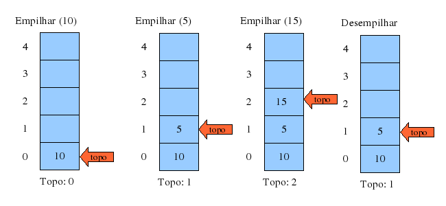

ㅤㅤㅤㅤㅤPilhaㅤㅤㅤㅤㅤ
Oque é a Pilha na Programação?
Em programação, uma pilha é uma estrutura de dados que segue o conceito "last-in, first-out" (LIFO), ou seja, o último elemento inserido é o primeiro a ser removido. É semelhante a uma pilha de pratos: o último prato adicionado é o primeiro a ser removido.
Na pilha, os elementos são adicionados e removidos apenas do topo da pilha, tornando a operação de inserção e remoção muito rápida. A principal operação que podemos realizar em uma pilha são:
-Push (empurrar): adiciona um elemento ao topo da pilha.
-Pop (retirar): remove e retorna o elemento do topo da pilha.
-Peek (espiar): retorna o elemento no topo da pilha sem removê-lo.
As pilhas são amplamente utilizadas em programação, em particular para a execução de operações reversíveis, como o desfazer (undo) e o refazer (redo) em um editor de texto. Também são utilizadas em algoritmos como o Depth-First Search (DFS), que é um algoritmo de busca em grafos.
